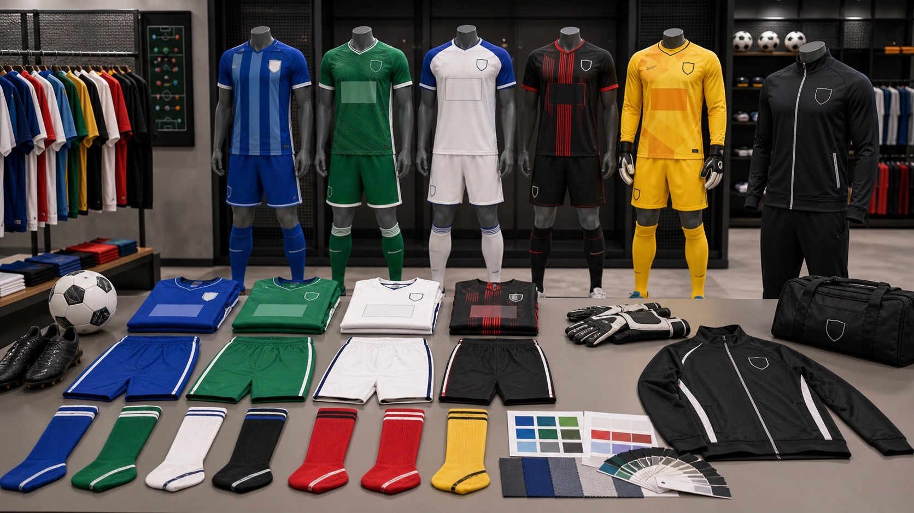
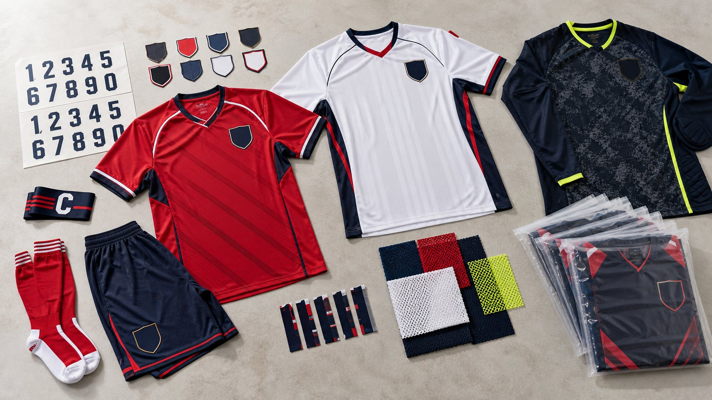
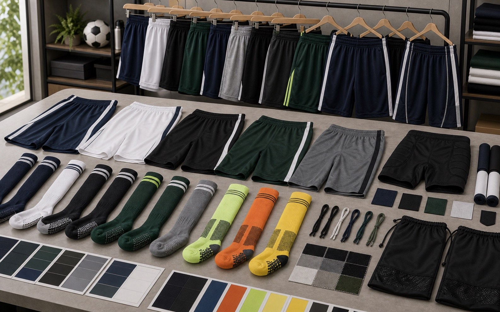

Match Uniform Sets
- Home, away, third, goalkeeper, and training versions
- Club crests, sponsor logos, sleeve marks, names, and numbers
- Suitable for adult teams, youth teams, academies, and tournaments

Soccer jerseys shorts socks goalkeeper kits
Develop custom soccer uniforms for clubs, academies, schools, leagues, tournaments, and fan shops, including home and away jerseys, shorts, socks, goalkeeper kits, sponsor logos, team names, numbers, labels, and roster packing.
Soccer uniform range
Plan the full team set together so color, logo placement, size ratios, and packaging stay consistent across players and reorders.



Buyer checklist
A clear brief helps confirm fabric, artwork, roster details, packing, and delivery timing before sampling or bulk production.
Send vector logo files, sponsor placements, number font, name rules, sleeve marks, and color references.
Share player list, size split, goalkeeper versions, youth sizing needs, and spare pieces for replacements.
Choose lightweight mesh, quick-dry polyester, stretch panels, compression add-ons, and warm-up layers.
Decide whether uniforms ship by player, by team, by size ratio, or by retail SKU with labels and cartons.
Yes. GloryStarWear can make soccer jerseys, shorts, socks, goalkeeper kits, training tops, club merchandise, names, numbers, sponsor marks, labels, and roster packing.
The product setup is similar. This page uses the US search term soccer uniforms, while football kits covers the same teamwear category for global buyers.
Yes. Player names, numbers, club crests, sponsor logos, sleeve patches, and team labels can be prepared from a roster sheet.
Clubs, schools, academies, event organizers, distributors, fan shops, and ecommerce teamwear sellers can build soccer uniform programs.
Send crest files, sponsor artwork, colors, roster, size list, quantity, delivery country, and target date. We will suggest a practical production route.